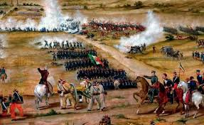
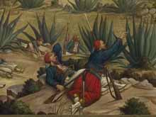

Batalla de Puebla
4 De Mayo

5 De Mayo

-
Batalla 4 de Mayo
¿Porque se dio la batalla 4 de Mayo?
-
Batalla 5 de Mayo
¿Porque se dio la batalla 5 de Mayo?
-
Inicio del conflicto
¿Porque inicio el conflicto de la batalla 4 y 5 de Mayo?
-
Monumentos de la batalla o museos que extiste sobre la Batalla de Puebla
Monumentos o museos de la Batalla de Puebla
-
Heroes de la batalla
¿Quienes fueron los heroes de la Batalla de Puebla?
Para mas informacion de la Batalla 4 de Mayo dar clic aqui
Para mas informacion de la Batalla 5 de Mayo dar clic aqui


 1
1 5
5